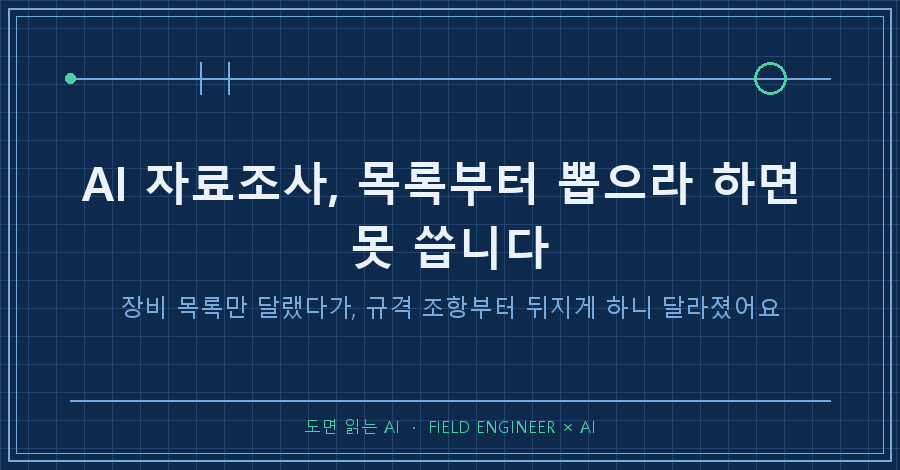
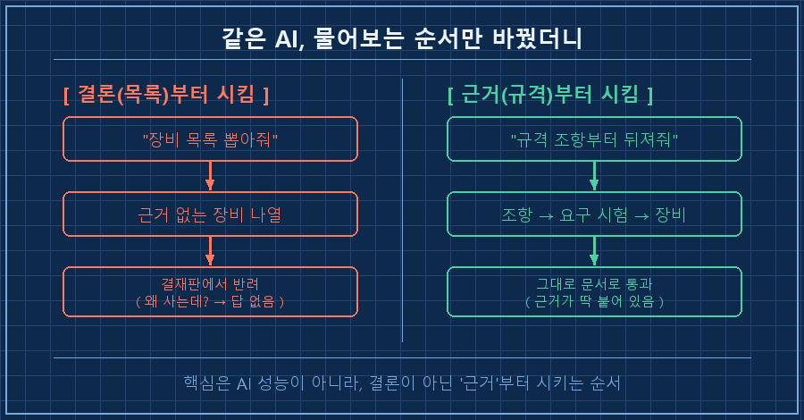
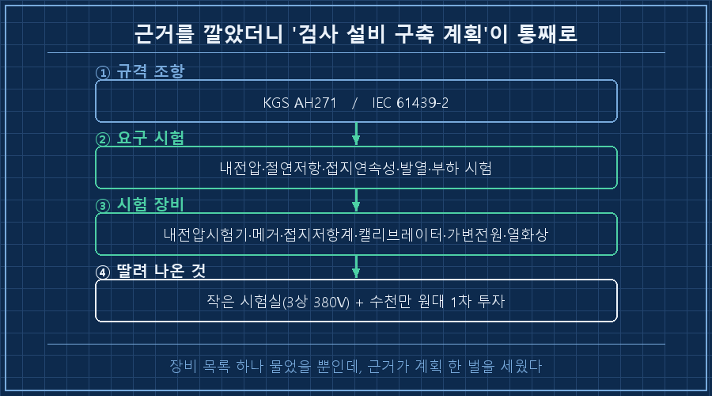

제조업에서 만들던 시제품이 양산으로 넘어가는 순간, 난데없이 '검사장비'라는 숙제가 툭 떨어져요.
출하 전에 제품을 시험할 장비를 갖춰야 하는데, 뭘 사야 하는지부터 막막하더라고요.
그래서 저는 AI한테 물었습니다. "제어판넬 출하검사 장비 목록 좀 뽑아줘."
답은 5초 만에 나왔는데, 그 목록으론 결재 한 장 못 올렸어요.
AI 자료조사는 이렇게 '목록부터' 시키면 못 씁니다. 순서를 뒤집어 근거부터 시켜야 실무에서 살아남더라고요.
수소 플랜트 제어판넬을 15년째 만지는 사람입니다.
판넬 설계하고, PLC 로직 짜고, 현장 나가 결선 확인하는 게 일이고요.
요즘은 만들던 설비를 양산으로 넘기는 단계라, 그 잡일의 절반쯤을 AI랑 같이 하고 있어요.
1. "장비 목록 뽑아줘"가 왜 함정이었냐면
AI가 뽑아준 첫 목록은 그럴듯했어요.
내전압 시험기, 절연저항계, 접지저항계, 열화상 카메라..
검색만 해도 나올 법한, 딱 교과서적인 리스트였죠.
문제는 그다음이었어요.
이걸 왜 사야 하냐고 물으면 답이 없는 거예요.
장비 이름만 있고 "이게 어느 규격, 어느 조항 때문에 필요한지"가 통째로 비어 있었거든요.
양산 검사장비는 취향으로 사는 게 아니에요.
제품이 통과해야 하는 인증·규격이 "이 시험을 하라"고 정해두면, 그 시험을 하려고 사는 거죠.
그러니 근거 없는 장비 목록은 결재판 앞에서 그냥 종잇조각이었어요.
2. 그래서 순서를 통째로 뒤집었어요
이번엔 이렇게 다시 시켰습니다.
"장비 말고, 이 제어판넬이 통과해야 하는 규격 조항부터 뒤져줘. 장비는 그다음이야."
그러자 결과의 뼈대가 바뀌었어요.
수소 설비 쪽 시설 기준(KGS AH271)과 저압 판넬 어셈블리 국제규격(IEC 61439-2)을 근거로 깔고,
그 규격이 요구하는 시험이 먼저 나오고,
그 시험을 하려면 어떤 장비가 필요한지가 뒤따라 나오는 구조였어요.
[근거부터 시킨 결과 — 규격 → 시험 → 장비]
규격 조항 (KGS AH271 / IEC 61439-2)
└ 요구 시험
├ 내전압·절연내력 → 안전규격(내전압) 시험기
├ 절연저항 → 고압 절연저항계(메거)
├ 접지 연속성 → 접지저항계
├ 계측 정확도 담보 → 정밀 캘리브레이터
├ 부하·오동작 시험 → 가변 전원
└ 발열 점검 → 열화상 카메라똑같은 AI인데, 물어보는 순서 하나 바꿨다고 쓸 수 있는 문서가 나온 거예요.

3. 근거가 붙으니 '살아있는 목록'이 됐어요
이제 장비 목록 옆에는 저마다 "이건 이 시험 때문, 그 시험은 이 조항 때문"이 딱 붙어 있었어요.
결재를 올리는 사람 입장에선 이게 전부예요.
"왜 이 돈을 쓰냐"에 규격 조항으로 답이 되니까요.
여기서 멈추지 않고 딸려 나온 게 더 있었어요.
이 장비들을 놓고 시험할 공간(작은 시험실 하나, 3상 380V 전원),
그리고 처음 갖추는 데 드는 수천만 원대 1차 투자 규모까지요.
장비 목록 하나 물었을 뿐인데, 근거를 깔았더니 '검사 설비 구축 계획' 한 벌이 통째로 선 거죠.

4. 이게 검사장비만의 얘기가 아니더라고요
곱씹어보니 이건 장비 살 때만 쓰는 요령이 아니었어요.
AI 자료조사를 시키는 방식 자체의 문제였죠.
AI는 "결론을 만들어줘"라고 하면 정말 그럴듯한 결론을 잘 만들어줘요.
근데 실무에서 그 그럴듯함이 함정이에요.
현장에서 필요한 건 매끈한 결론이 아니라, "왜 그런지 되짚을 수 있는 근거"거든요.
PLC 배울 때랑 똑같더라고요.
매뉴얼의 결론만 외운 사람은 현장에서 상황이 조금만 틀어져도 무너져요.
왜 그렇게 동작하는지 원리를 아는 사람은 안 무너지고요.
AI한테 일을 시킬 때도 그 원리 자리에 '근거'를 넣어주는 거예요.
| 시키는 순서 | 나오는 것 | 실무에서 |
|---|---|---|
| 결론(목록)부터 | 그럴듯한 리스트 | 근거 없어 결재 반려 |
| 근거(규격)부터 | 조항 → 시험 → 장비 | 그대로 문서로 통과 |
그래서 요즘 제 규칙은 하나예요.
결론을 먼저 시키지 않는다.
규격이든 데이터시트든 원문 근거부터 뒤지게 하고, 결론은 그 근거에서 스스로 따라 나오게 둔다.
자주 묻는 질문
Q. 근거부터 시키면 시간이 더 걸리지 않나요?
처음 몇 분은 더 걸려요. 근데 결론부터 받은 목록은 결국 "이거 왜 필요해?"에서 다시 처음으로 돌아가요. 그 왕복까지 치면 근거부터가 훨씬 빨라요. 저는 반나절 헤맬 걸 이 순서로 한 번에 끝냈어요.
Q. AI가 규격을 틀리게 인용하면요?
그건 여전히 사람 몫이에요. AI가 뽑은 조항은 반드시 원문으로 한 번 확인해요. 근거부터 시키는 이유가 사실 이거예요. 결론만 받으면 뭘 검증해야 할지도 모르는데, 근거를 받으면 그 근거만 대조하면 되거든요.
양산으로 넘어가는 길목마다 "뭘 사야 하지, 근거는 뭐지" 하는 숙제가 계속 떨어져요.
그때마다 AI 자료조사에 답부터 시키지 않고 근거부터 시키는 습관 하나가, 결재판 앞에서 저를 여러 번 살렸습니다.
다음엔 이렇게 갖춘 시험 장비로 실제 출하검사 시퀀스를 어떻게 짰는지 풀어볼게요.
비슷하게 시제품을 양산으로 넘기는 중이시면, 제가 이 과정에서 헤맨 기록을 [makefield.ai](https://makefield.ai)에 정리해두고 있으니 슬쩍 참고하셔도 좋아요.
---
태그: #AI자료조사 #AI에게자료조사시키는법 #AI규격검토 #양산검사장비 #출하검사장비 #제어판넬검사 #AI활용법 #AI실무 #현장엔지니어 #제조업AI #AI프롬프트 #엔지니어AI #IEC61439 #검사설비구축 #도면읽는AI